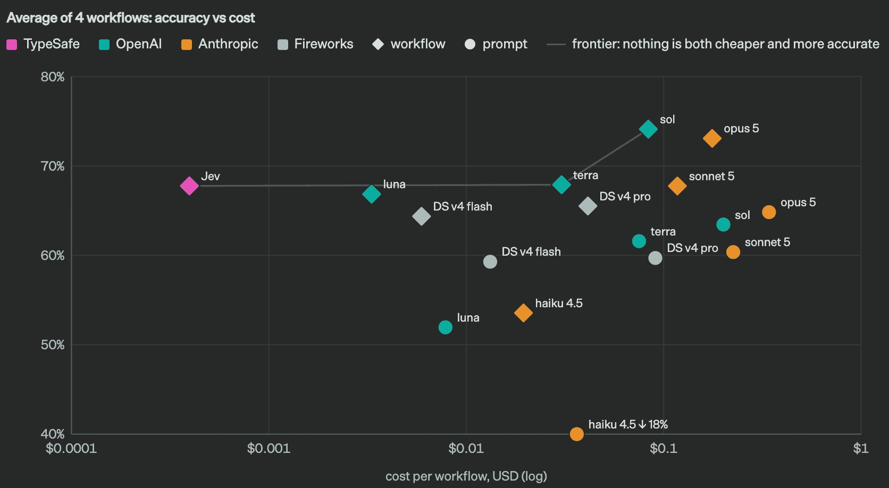

Pow Mingle #11: JEV(Decisions API)
A shared meal, a new technology, and something to try
About Pow Mingle
Our group is open to everyone interested in making interesting things, whether or not you work in tech.
AI tools and insights arrive every day. It can be hard to find time to understand them, let alone try them. Each month, we explore one new AI technology and apply it to our own ideas.
Bring your curiosity, an everyday frustration, or something you want to make. You do not need a technical background or a finished project.
Why meet at a restaurant?
Sharing a meal gives us a relaxed way to meet. Conversation can begin with what we do, what interests us, or what we are trying to figure out.
The setting is part of the idea: make it easier to join the conversation, get to know someone, and find something worth trying together.
What to try tonight
- Get to know the people at your table.
- Explore JEV and the two examples.
- Find one decision in your idea that AI could help with.
How JEV works
JEV is an AI model from TypeSafe. It understands text and answers focused questions with choices, probabilities, or scores that an app can use.1

You define the question and possible answers. The app combines small judgments into a useful workflow; probabilities help flag uncertainty.